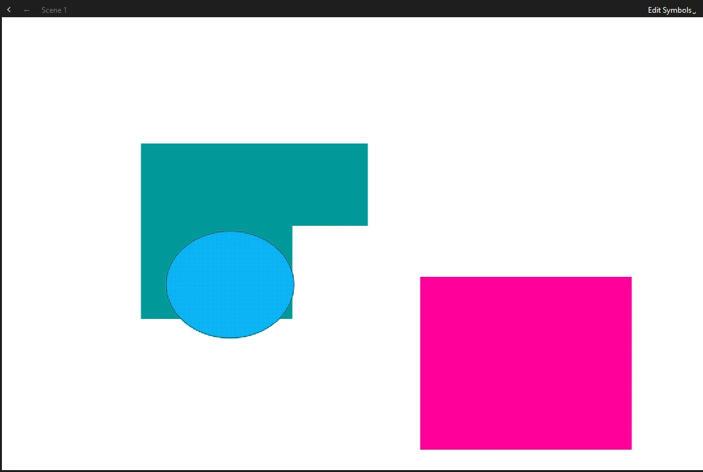
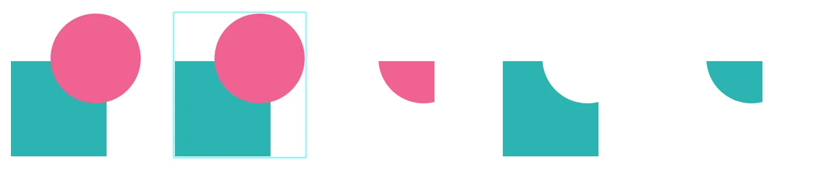

Drawing
Merge and object drawing
Phoenix draws in two ways. In merge drawing, shapes on the same layer behave like wet paint: they cut into and join each other. In object drawing, each shape keeps to itself. Knowing which one you are in explains almost everything about how your drawing reacts.
Switching between them
The Object Drawing button at the end of the toolbox, after the color swatches, or J, switches the mode for new shapes. Merge drawing is the default. The setting applies to the shape tools, Line, Pen, Pencil, Paint Brush and brushes; existing shapes keep whatever kind they already are.
Merge drawing
A merge shape is made of fills and strokes that are cut wherever they cross. When shapes on the same layer overlap:
- A new fill replaces what it covers. Draw a pink square over a teal one and the pink area cuts away the teal underneath it.
- Same colors join. Two touching fills of the same color become one area with no seam.
- A stroke divides a fill. Drawing a line across a fill splits it into two pieces you can select and color separately, without erasing anything.
- A fill covers a stroke. Painting a fill over a line buries the part it covers.
When the cut happens
A shape you have just drawn floats above the artwork, still selected. It cuts what is under it when you draw it, so moving it straight away reveals the hole it made. When you click elsewhere, the floating shape drops into the artwork and merges with it.
The same happens when you move, transform or reshape part of a merge drawing: the edited part floats while it is selected, and settles back into the artwork when you deselect it.

New merge artwork always goes under the layer's groups, symbol instances and drawing objects, so drawing on a layer never covers the objects on it. keeps it there: merge artwork moves only among the layer's other merge artwork, and objects only among objects.
Keep artwork that should not cut each other on separate layers, or group it (Ctrl+G). Merging only happens between shapes on the same layer and at the same level.
Selecting merge artwork
With the Selection tool:
- Click a fill to select that one area, or a stroke to select one segment of it. Selected areas show a fine dot pattern in the layer's color.
- Double-click a fill to select it with its outline, or a stroke to select every connected segment.
- Drag a rectangle, or use the Lasso, to select part of a shape. The shape is cut along the edge of your selection, so you can drag out exactly the piece you enclosed.
- Press Delete to remove the selected part.
Reshaping merge artwork
With the Selection tool and nothing selected, point at an edge of a shape:
- When the cursor shows a curve, drag to bend the edge.
- When the cursor shows a corner, drag to move the corner point.
- Hold Ctrl while dragging an edge to pull a new corner out of it.
Object drawing
With Object Drawing on, each shape you draw becomes a drawing object: a self-contained shape that never cuts or joins anything else. When selected, it shows a thin box rather than the dot pattern. You can stack drawing objects freely and change their order with .
Primitives
The Rectangle Primitive and Oval Primitive tools always make objects, in either mode. Unlike plain shapes, primitives stay editable: you can change a rectangle's corner radii, or an oval's start and end angles and inner radius, on the Object tab of the Properties panel at any time. See Shapes and primitives.
Converting between the two
- Break Apart
- Ctrl+B. Turns a drawing object or primitive into merge artwork, which floats, selected, and merges with the artwork under it when you deselect it. It also breaks a group into its contents, and a symbol instance into the artwork of the frame it shows.
- Union
- . Turns the selected shapes, of either kind, into a single drawing object.
- Trace Bitmap
- . Turns a bitmap on the stage into filled shapes you can edit, one for each area of like color. See Trace Bitmap.
Combining objects
Select two or more shapes on the same frame and layer, drawing objects, primitives or merge artwork in any mix, and choose a command from . What is on top matters: the topmost selected shape does the cutting.

| Command | Result |
|---|---|
| Union | All the selected shapes become one drawing object, each in its own colors, upper ones over lower ones as they were stacked. It takes the place of the lowest of them in the stack. |
| Intersect | One drawing object of only the area every selected shape covers, in the colors of the top one. If they don't all overlap, nothing changes. |
| Punch | The top shape's area is cut out of each shape beneath it, and the top shape goes. |
| Crop | Each shape beneath the top one keeps only what lies inside the top shape, and the top shape goes. |
After Punch and Crop, the shapes beneath keep their own colors and their own kind: a drawing object stays a drawing object, and merge artwork stays merge artwork. Union and Intersect always leave a drawing object, which is a handy way to turn merge artwork into one; break it apart again (Ctrl+B) if you want merge artwork back.
Groups, symbol instances, text and bitmaps are left out of a combine; with fewer than two shapes selected, the status bar asks for more. Break them apart first to combine their artwork. Each combine is one step to undo.
In merge drawing you often get the same results without a command: draw a shape over another and drag it away to punch a hole, or draw in the same color to join. Combine Objects is for drawing objects, which never cut each other on their own.
Groups
A group (Ctrl+G) holds any mix of shapes, objects, text and instances so they move together and are protected from merging. Ctrl+Shift+G ungroups. Double-click a group to edit inside it while the rest of the stage dims; double-click empty stage to leave. Merge artwork inside a group merges only with other merge artwork in the same group.
For moving, transforming, aligning and stacking shapes and objects, see Selecting and transforming.